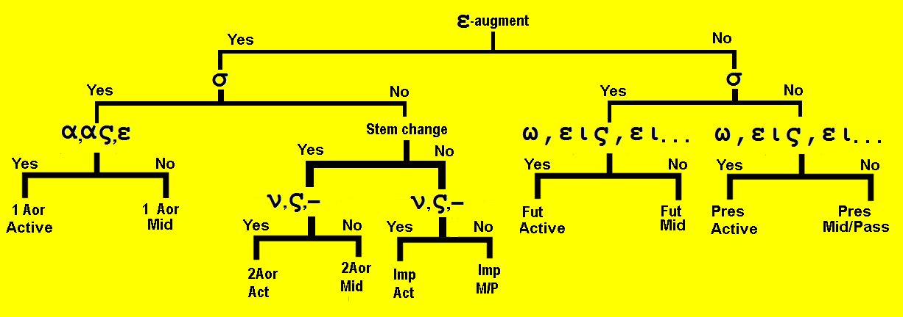

| Greek | Meaning | Notes |
|---|---|---|
| ἔβαλον | I threw, cast | 2nd Aor. of βάλλω |
| εἶδον | I saw | 2nd Aor. of βλέπω |
| εἶπον | I said | 2nd Aor. of λέγω |
| ἔλαβον | I took | 2nd Aor. of λαμβάνω |
| ἤγαγον | I led | 2nd Aor. of ἄγω |
| ἦλθον | I came, went | 2nd Aor. of ἔρχομαι |
| ἤνεγκα | I bore, brought | 1st Aor. of φέρω |
| ἤνεγκον | I bore, brought | 2nd Aor. of φέρω |
| λεἰπω | I leave | |
| ἔλιπον | I left | 2nd Aor. of λείπω |
| πάσχω | I suffer | |
| ἔπαθον | I suffered | 2nd Aor. of πάσχω -- cognate: empathy |
| πίπτω | I fall | |
| ἔπεσον | I fell | 2nd Aor. of πίπτω |
| ἔσχον | I had | 2nd Αor. of ἔχω |
| ἔφαγον | I ate | 2nd Aor. of ἐσθίω -- cognate: esophagus |
Lexical Study
| Singular | ||
| Form | Meaning | |
|---|---|---|
| 1st | ἔλιπον | I left |
| 2nd | ἔλιπες | yous left |
| 3rd | ἔλιπε (ν) | he/she/it left |
| Plural | ||
| Form | Meaning | |
| 1st | ἐλίπομεν | we left |
| 2nd | ἐλίπετε | youp left |
| 3rd | ἔλιπον | they left |
| Singular | ||
| Form | Meaning | |
|---|---|---|
| 1st | ἐλιπόμην | I left for myself |
| 2nd | ἐλίπου | yous left for yourself |
| 3rd | ἐλίπετο | he/she/it left for himself |
| Plural | ||
| Form | Meaning | |
| 1st | ἐλιπόμεθα | we left for ourselves |
| 2nd | ἐλίπεσθε | youp left for yourselves |
| 3rd | ἐλίποντο | they left for themselves |
- The second aorist is unlike the first aorist because it does not add σα or κα to the stem.
- Instead it radically changes the spelling of the stem.
- The second aorist passive is different from the middle forms
- The only way to tell if a verb has a first aorist form or a second aorist form is by looking at the list in the Appendix 1.
- The second aorist is formed just like the imperfect:
- Add the augment ε to the front because it is a past tense.
- Add the secondary endings to the end of the new stem: -ν, -ς, none, -μεν, -τε, -ν (or -σαν)
- Rarely, some verbs, like φέρω have both a first aorist and a second aorist.
- The function of the second aorist is exactly the same as that of the first aorist--completed action in past time.

Translate the following:
- παρέλαβε τὴν ἐπαγγελίαν παρὰ τοῦ μεσσίου, καὶ κηρύσσει αὐτὴν ἐν τῇ ἐκκλησίᾳ.
- ἐγένοντο οἱ μαθηταὶ τοῦ κυρίου.
- ὁ χριστός ἐξέβαλε τὰς ἁμαρτίας τῶν ἁμαρτωλῶν καὶ ἐθεράπευσεν αὐτούς.
- καὶ εἴδομεν τὸν κύριον καὶ ἠκούσαμεν τῶν λόγων αὐτοῦ.
- οἱ ἀπόστολοι εἶδον τὸν υἱὸν τοῦ θεοῦ, ἐγένετο γὰρ αὐτὸς ἄνθρωπος καὶ ἔμενεν ἐν τῷ κόσμῳ.
- ταῦτα εἴπετε ἡμῖν ἐν τῷ ἱερῷ, ἐκεῖνα δὲ ἐν τῷ οἴκῳ.
- οὐδὲ εἰσῆλθες εἰς τὴν ἐκκλησίαν, οὐδὲ εἶπες λόγους ἀγάπης τοῖς τέκνοις.
- τὰ ἱερὰ αἱ πισταὶ ἔλιπον, καὶ κατῆλθον εἰς τοὺς οἴκους αὐτῶν.
- ὁ ἄνθρωπος ἤγαγε τὰ τέκνα πρὸς τὸν κύριον ὅτι ἔσχε τὴν ἀγάπην τοῦ θεοῦ ἐν τῇ καρδίᾳ αὐτοῦ.
- οἱ δίκαιοι ἔφαγον ἄρτον ἐν τῇ ἐρήμῳ καὶ ἐδόξασαν τὸν θεόν.
- ὁ χριστὸς ἔπαθε πονηρὰ ὑπὲρ ἁμαρτωλῶν.
- τὰ τέκνα ἤνεγκε λίθους καὶ εἰσέβαλεν αὐτοὺς εἰς τὸν οἶκον τοῦ προφήτου.